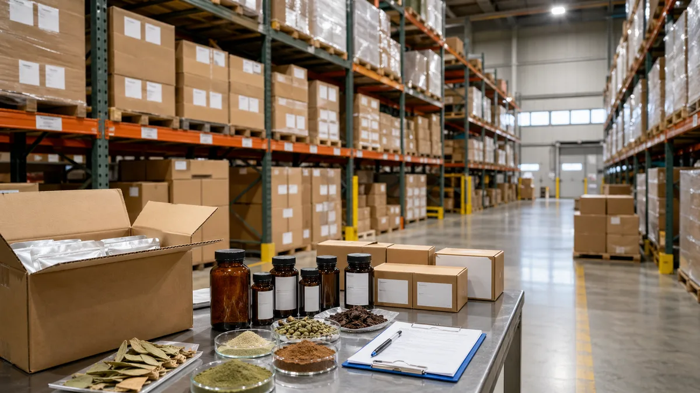
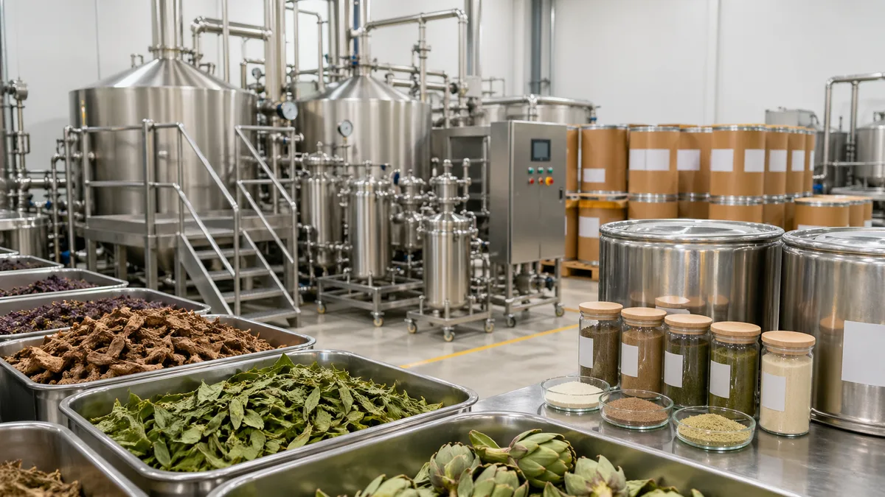

Botanical Extracts
Standardized plant extracts organized for U.S. B2B product screening and RFQ flow.
Source botanical extracts, nutraceutical ingredients, cosmetic ingredients, and fruit & vegetable powders through a U.S.-market front end with U.S. warehouse support, documentation-ready workflows, and manufacturing-backed supply.
Standardized plant extracts organized for U.S. B2B product screening and RFQ flow.
Commercially relevant supplement ingredients with document-aware product pages.
Selected botanical ingredient options for personal-care sourcing conversations.
Powders for beverage and food formulation teams comparing origin, format, and support.
The site is designed to answer the first B2B questions quickly: what the ingredient is, which applications it supports, what document path exists, and how U.S. commercial follow-up works.
The homepage now leads with the five brand ingredient programs most useful for first-pass buyer screening: branded positioning, key markers, application fit, and a direct path to inquiry.
Products are tagged as US Warehouse Available, Available by Inquiry, or Made to Order so buyers can screen for speed and fit early.


Essence Source is positioned as the U.S. commercial front end. Manufacturing depth, testing capability, and supporting documents come from the partner-supply relationship, presented carefully for B2B buyers.